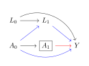
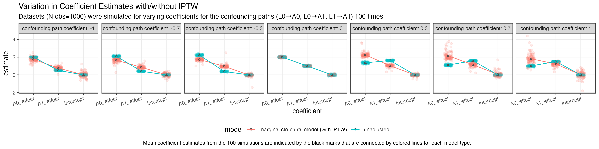
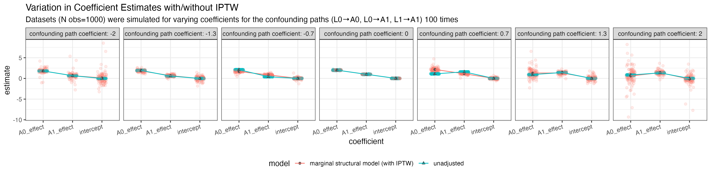

3 Marginal Structural Models
Notes on Marginal Structural Models and Causal Inference in Epidemiology by James M. Robins, Miguel Ángel Hernán, and Babette Brumback (2000), Epidemiology
https://doi.org/10.1097/00001648-200009000-00011
Introduction
The key problem this paper addresses is the bias induced by time-dependent confounders that are also affected by previous treatment — which are handled by the introduction of marginal structural models that can be consistently estimated using inverse-probability-of-treatment weighted (IPTW) estimators.
Definition. Time-dependent confounders are covariates that are a risk factor for, or predictor of, the event of interest and also predicts subsequent exposure.
We are particularly interested in time-dependent confounders that are also affected or predicted by past exposure history (Condition 2).
Time-Dependent Confounding
Consider a follow-up study of HIV-infected patients. Let \(A_k\) be the dose of the treatment or exposure of interest, say zidovudine (AZT) on the \(k\)th day since start of follow-up. Let \(Y\) be a dichotomous outcome of interest (for example, \(Y = 1\) if HIV RNA is not detectable in the blood and 0 otherwise) measured at end of follow-up on day \(K+1\). Our goal is to estimate the time-dependent treatment \(A_k\) on the outcome \(Y\).
Let \(L_k\) represent the vector of all measured risk factors on day \(k\) for the outcome such as age, CD4 lymphocyte count, white blood count, hematocrit, diagnosis of AIDS, and presence of absence of symptoms and opportunistic infections. Let \(U_k\) represent the value(s) on day \(k\) of all unmeasured causal risk factors for \(Y\).


Before diving immediately into how to address time-varying confounding that is affected by antecedent exposures, we establish some preliminary findings in the setting of point-treatment studies.


I think Robins, Hernán, and Brumback summarize the problem with time-varying confounders quite clearly in section 7.1:
“… Standard regression methods adjust for covariates by including them in the model as regressors. These standard methods may fail to adjust appropriately for confounding due to measured confounders \(L_k\) when treatment is time varying because (1) \(L_k\) may be a confounder for later treatment and thus must be adjusted for, but (2) may also be affected by earlier treatment and thus should not be adjusted for by standard methods. A solution to this conundrum is to adjust for the time-dependent covariates \(L_k\) by using them to calculate the weights \(sw_i\) rather than by adding \(L_k\) to the regression model as regressors.”
Counterfactuals in Point-Treatment Studies
In an effort to help orient the readers, the authors provide some basic background on causal inference in point-treatment studies (Figures 2a-2c) to help keep us all grounded before moving on to more complicated settings.
Through this section (\(\S2\)) the authors contrast crude measures with causal measures explaining that the causal measures will equal the crude measures when the analysis is unconfounded.
\[cRD = Pr[Y = 1 | A_0 = 1] - Pr[Y = 1 | A_0 = 0] \quad \text{\small (Crude Risk Difference)}\] \[cRR = Pr[Y = 1 | A_0 = 1]/Pr[Y = 1 | A_0 = 0] \quad \text{\small (Crude Risk Ratio)}\] \[cOR = \frac{Pr[Y = 1 | A_0 = 1]/Pr[Y=1 | A_0 = 0]}{Pr[Y=0 | A_0 = 1]/Pr[Y=0 | A_0 = 0]} \quad \text{\small (Crude Odds Ratio)}\]
\[Pr[Y_{a_0 = 1} = 1] - Pr[Y_{a_0 = 0} = 1] \quad \text{\small (Causal Risk Difference)}\] \[Pr[Y_{a_0 = 1} = 1]/Pr[Y_{a_0 = 0} = 1] \quad \text{\small (Causal Risk Ratio)}\] \[\frac{Pr[Y_{a_0 = 1} = 1]/Pr[Y_{a_0 = 0} = 1]}{Pr[Y_{a_0=1}=0]/Pr[Y_{a_0=0} = 0]} \quad \text{\small (Causal Risk Ratio)}\]
Note that the way I’ve written the odds ratios is to make the structure of them obvious as ratios of odds, but of course one can re-express any fraction written \(\displaystyle \frac{a / b}{c / d} = \frac{a d}{b c}\), which is how they’re presented in the paper.
An important point they make is that because of the possibility of effect modification, the population causal parameter need not be the same as its estimate in a particular stratum of measured risk factors even if the treatment is unconfounded.
To estimate these quantities of interest, we might fit linear, exponential, and logistic models depending on expert knowledge about the nature of the data being considered (and what type of exposure-response curve we expect):
\[Pr[Y_{a_0} = 1] = \phi_0 + \phi_1 a_0\] \[\log Pr[Y_{a_0} = 1] = \theta_0 + \theta_1 a_0\] \[\text{logit} Pr[Y_{a_0} = 1] = \beta_0 + \beta_1 a_0\]
Interpreting, the causal RD is \(\phi_1\), the causal RR is \(e^{\theta_1}\), and the causal OR is \(e^{\beta_1}\).
These models are described as marginal because they model the marginal distribution of the counterfactual random variables \(Y_{a_0=1}\) and \(Y_{a_0=1}\) rather than the joint distribution (as in, they do not model \(\text{cor}(Y_{a_0=1}, Y_{a_0=0})\)). They are said to be structural because they model the probabilities of counterfactual variables (apparently models for counterfactual variables are often called structural in the econometrics and social science literature).
I’m a little confused about their claim that these are saturated models: they say that they’re saturated because each model has two unknown parameters and places no restriction on the probabilities for \(Y_{a_0 = 1}\) and \(Y_{a_0 = 0}\). I guess I’m just used to a different definition of saturated in which saturation refers to the model having as many parameters as it has data points, which does not feel like it’s necessarily true here.
No Unmeasured Confounders
Next a claim is introduced: if we weight the observations by \(w_i = 1/Pr[A_0 = a_{0i} | L_0 = l_{0i}]\) where \(l_{0i}\) and \(a_{0i}\) are the measured covariates and exposures for subject \(i\), then we should recover unbiased estimates of the causal quantities of interest.
A rough sketch of why this should work is presented that rests on two additional claims:
- In the constructed pseudopopulation, \(A_0\) should be unconfounded by the measured covariates \(L_0\).
- \(Pr(Y_{a_0=1} = 1)\) and \(Pr(Y_{a_0=1} = 0)\) are the same as in the true study population so that the causal RD, RR, and OR are the same in both populations.
Proof of 1. We want to show that \[Pr^W(A = a | L = l) \stackrel{claim}{=} Pr^W(A = a),\] where \(Pr^W\) refers to probability in the reweighted pseudopopulation.
I will only show this for the case where both \(A\) and \(L\) are dichotomous.
First, we can establish that \[Pr^W(A = a | L = l) = \frac{N_{(A = a, L =l)} w}{\sum_{i \colon L_i = l} w_i},\] where \(w = 1/Pr(A = a|L=l)\) is a scalar-value and
\[w_i = \left\{ \begin{array}{ll} 1/Pr(A=1|L=l) & \text{ if } A_i = 1 \\ 1/Pr(A=0|L=l) & \text{ if } A_i = 0 \end{array}\right.\]
where \(N_{(A=a,L=l)} \stackrel{\text{def}}{=} \sum_{i \colon a_i = a, l_i = l} 1\).
Letting \(w' = 1/Pr(A = 1-a | L=l)\), then we have that:
\[Pr^W(A = a | L = l) = \frac{N_{(A=a, L=l)}w}{N_{(A=a,L=l)}w + N_{(A=1-a,L=l)}w'}.\]
Substituting that \(Pr(A = a | L = l)\) is estimated by \(N_{(A=a,L=l)}/N_{(L=l)}\), we have that
\[Pr^W(A = a | L = l) = \frac{\cancel{N_{(A=a, L=l)}} \frac{N_{(L=l)}}{\cancel{N_{(A=a,L=l)}}}}{ \cancel{N_{(A=a,L=l)}} \frac{N_{(L=l)}}{\cancel{N_{(A=a,L=l)}}} + \cancel{N_{(A=1-a,L=l)}} \frac{N_{(L=l)}}{\cancel{N_{(A=1-a,L=l)}}}}\] \[ = \frac{N_{(L=l)}}{2 N_{(L=l)}}\] \[ = \frac{1}{2}\]
In general, if \(L\) took on more than just two values, we find that the probability that \(A=a\) is the inverse of the number of levels of \(L\), which is independent of any single value that \(L\) could take on.
\(\square\)
If we consider the 3-way tables necessary in the situation when \(A\), \(L\), and \(Y\) are each dichotomous, we’re looking at something like this (for a simulated study of 1,000 participants):

After applying inverse probability of treatment weights:


After some searching, I believe I have found a proof, in Rebecca Barter’s blog-post on The intuition behind inverse probability weighting in causal inference.
Before getting into the proof, she helpfully reminds us that a causal estimand is identifiable when (1) exchangeability/ignorability, (2) consistency, and (3) positivity all hold.
Definition. Exchangeability is the assumption we can re-arrange our observations without altering our conclusions. In the context of causal inference, we’re saying that we’d like our observations to be identically and independently distributed, same for the treatment assignment mechanism, and that therefore except for the treatment individual units received, we can permute them without changing our results.
Definition. Consistency refers to whether or not our model of potential (unobserved) outcomes is valid, in that our model is consistent with the reality of the data generating processes if we are making accurate statements regarding \(Pr(\text{outcomes}|\text{exposures}).\)
Definition. Positivity refers to the fact that all observations necessarily must have strictly positive probability of being assigned to either the treatment or control group — because otherwise if there is 0 probability of assignment to one of the treatment or control groups, we will necessarily lack observations from that group and thus unable to form causal estimates.
If we were to have exchangeability, consistency, and positivity, then we could say that the average treatment effect is estimated by \[\frac{\sum_{i \colon A=1} Y_i}{N_{(A=1)}} - \frac{\sum_{i \colon A = 0} Y_i}{N_{(A=0)}},\] since by exchangeability the observations are not confounded.
Now we can proceed to proving the claim that re-weighting the population as described produces a pseudopopulation in which the causal estimate is unbiased.
Proof. Let \(p(l) = Pr(A=1|L=l)\) where for treated individuals we will weight them by \(1/p(l)\) and for untreated individuals we will weight them by \(1/(1-p(l))\) and we would estimate \(\hat p\) by a logistic regression model.
The causal estimate with inverse probability of treatment weighting is then given by:
\[\sum_{i \colon A=1} \frac{Y_i}{N_{(A=1)} \hat p(L_i)} - \sum_{i \colon A = 0} \frac{Y_i}{N_{(A=0)} (1-\hat p(L_i))}\]
\[ = \sum_{i}^n \frac{Y_iA_i}{n \hat p(L_i)} - \sum_{i}^n \frac{Y_i(1-A_i)}{n (1-\hat p(L_i))},\]
where \(n\) is the total population size of observations and \(N_(...)\) is my short-hand notation for \(\displaystyle \sum_{i \colon ...} 1\).
What remains to be checked is if the above is equal to \(\mathbb E[Y_{A=1}] - \mathbb E[Y_{A=0}]\) (with respect to the super-population that we assume is exchangeable/unconfounded).
We will do so by verifying that \(\mathbb E\left[ \frac{YA}{p(L)} \right] = \mathbb E[Y_{A=1}]\) (and the same steps would follow for showing \(\mathbb E\left[ \frac{Y(1-A)}{1-p(L)} \right] = \mathbb E[Y_{A=0}]\).
\[\begin{aligned} \mathbb E\left[ \frac{YA}{p(L)} \right] & = \mathbb E\left[\mathbb E\left[ \frac{YA}{p(L)} \middle\vert L \right] \right] \\ & = \mathbb E\left[\mathbb E\left[ \frac{Y_{A=1}A}{p(L)} \middle\vert L \right] \right] \\ & = \mathbb E\left[\frac{\mathbb E[Y_{A=1}|L] \mathbb E[A|L]}{p(L)} \right] \\ & = \mathbb E\left[\frac{\mathbb E[Y_{A=1}|L] \cancel{\mathbb E[A|L]}}{\cancel{\mathbb E[A|L]}} \right] \\ & = \mathbb E\left[\mathbb E[Y_{A=1}|L]\right] \\ & = \mathbb E\left[Y_{A=1}\right]. \\ \end{aligned} \]
Hence we can conclude that the inverse probability of treatment weighting yields an unbiased estimator for the causal effect.
\(\square\)
Stabilized Weights
Robins, Hernán, and Brumback go on to say that if levels of \(A\) and \(L\) are strongly associated, then it is likely that we will see quite large inverse probability of treatment weights. Such undesired variability in our estimated weights suggest that few individuals may inappropriately dominate the pseudopopulation and hence the weighted analysis.
To mitigate this, they introduce “stabilized weights” which are written as \[sw_i = \frac{Pr(A = a_i)}{Pr(A=a_i | L=l_i)},\] which are the same weights as before just multiplied by \(Pr(A=A_i)\).
I am suspicious that the reason we’re able to do this trick is because if we refer back to the proof that the original weights provided an unbiased estimator, we saw that \[\mathbb E\left[ \frac{Y_{A=1}A}{p(L)} \right] = \mathbb E\left[ Y_{A=1} \right],\] and if we work the same argument through with the stabilized weights, I think we’d get \(\mathbb E\left[ Y_{A=1} \mathbb E[A] \right]\) instead. However, since \(\mathbb E[Y_{A=1}]\) is the expected value of \(Y\) when \(A=1\), I think we can say that the prior quantity is equal to \(\mathbb E\left[ Y \mathbb E[A] \middle\vert A = 1\right] = \mathbb E\left[ Y \middle \vert A = 1 \right] = \mathbb E[ Y_{A=1} ].\)
Time-Dependent Treatments
Returning to the setting of time-dependent confounding as in Figures 1a-c, let \(A_k\) represent the dosage of a treatment on the \(k\)th day from start of follow-up, \(Y\) is a dichotomous variable measured at the end of follow-up on day \(K+1\) , and \(L_k\) represents all measured risk factors for the outcome on day \(k\). We’ll let \(\bar A_k = (A_0, A_1, ..., A_k)\) be the treatment or exposure history thorugh day \(k\) and let \(\bar A = \bar A_K\).
Generally we’ll be more interested in the cumulative effect of dosage (\(\sum a_k\)) rather than specific dosage histories \(\bar a\) when thinking about counterfactuals.
Assuming no loss to follow-up selection bias or measurement error, we can unbiasedly estimate causal quantities using a logistic regression model
\[ \text{logistic}(Pr[Y=1 | \bar A = \bar a]) = \beta_0 + \beta_1 \sum a_k, \] if treatment is unconfounded.
However, if treatment is confounded, we need to reweight the population by stabilized weights given by
\[sw_i = \frac{\displaystyle \prod_{k=0}^K Pr(A_k = a_{ki} | \bar A_{k-1} = \bar a_{(k-1)i})}{ \displaystyle \prod_{k=0}^K Pr(A_k = a_{ki} | \bar A_{k-1} = \bar a_{(k-1)i}, \bar L_k = \bar l_{ki}). }\]
Censoring by Loss to Follow-Up
They say that we can also consider censoring at time \(k\) (denoted \(C_k\)) as another aspect of treatment and re-work our analyses to become “inverse-probability-of-treatment-and-censoring weighted estimators” if we view \((A_k, C_k)\) as a joint-treatment at time \(k\).
Limitations
The authors state that marginal structural models cannot be used to model the interaction of treatment with a time-varying covariate (so effect modification). For this, they recommend structural nested models to be used.
As suggested above, it’s also the case that we cannot use marginal structural models when we have violations to the positivity assumption.
Important Points from the Appendix
If we recall the recommendations from Rosenbaum and Rubin, 1983, it’s worth distinguishing the approach suggested here from the propensity score based approaches previously. The propensity score methods were largely oriented towards either propensity score stratification, propensity score matching, or covariance adjustment for propensity scores. It’s very much worth noting that the inverse of the propensity score is not the same as the inverse probability of treatment proposed here, as the propensity score always models \(Pr(A=1|L=l)\) while the probability of treatment is the probability of the treatment a specific unit received, so \(Pr(A=a_i | L=l_i)\). In other words, for those units which were treated, the propensity score and the probability of treatment agree, but for untreated units, the probability of the treatment they received (no-treatment) is \(1-Pr(A=1|L=l_i)\).
As an additional consideration, it’s worth noting that matching or stratification methods could introduce significant bias if there is difficulty finding sufficiently close matches or residual uncontrolled-for intrastratum confounding.
Simulations to Build Intuition
I’ve been motivated by the question “how can we tell that we’ve implemented our marginal structural model (MSM) correctly if we allow ourselves to check our work in a simulation setting?”
My idea for “checking” centers around the idea that we can simulate data with varying strength on the pathways from the \(L\) (the time-varying confounders affected by the exposures) variables to the \(A\) (exposure) variables and compare what happens in MSMs comparing to the setting where there was 0 confounding.
To come up with a more straightforward setting to test our ideas in, the following DAG is sufficient as an example of a scenario where time-varying-confounding affected by exposures exist:
We’ll introduce a few functions to simulate some data.
# Function to generate simulated data
generate_sim_data <- function(N, confounding_path_strength) {
L0 <- rnorm(N)
A0 <- rnorm(N, mean = L0 * confounding_path_strength)
L1 <- rnorm(N, mean = L0 + A0)
A1 <- rnorm(N, mean = A0 + L0 * confounding_path_strength + L1 * confounding_path_strength)
Y <- rnorm(N, mean = A0 + A1 + L1)
data.frame(L0 = L0, A0 = A0, L1 = L1, A1 = A1, Y = Y)
}
# Function to calculate stabilized IPTW
# Note that since the above data generating function uses continuous variables, we
# estimate the densities of observations
calculate_stable_weights <- function(data) {
model_A0 <- lm(A0 ~ L0, data = data)
model_A1 <- lm(A1 ~ A0 + L0 + L1, data = data)
weights_A0 <-
1 / dnorm(
x = data$A0,
mean = coef(model_A0)[1],
sd = summary(model_A0)$sigma
)
weights_A1 <- 1 / dnorm(
x = data$A1,
mean = coef(model_A1)[1] + coef(model_A1)[2] * data$A0 +
coef(model_A1)[3] * data$L0 + coef(model_A1)[4] * data$L1,
sd = summary(model_A1)$sigma
)
model_A0_alone <- lm(A0 ~ 1, data = data)
model_A1_stabilizer <- lm(A1 ~ A0, data = data)
A0_stabilizer <-
dnorm(
x = data$A0,
mean = coef(model_A0_alone)[1],
sd = summary(model_A0_alone)$sigma
)
A1_stabilizer <-
dnorm(
x = data$A1,
mean = coef(model_A0_alone)[1] + data$A0 * coef(model_A1_stabilizer)[2],
sd = summary(model_A1_stabilizer)$sigma
)
A0_stabilizer * A1_stabilizer * weights_A0 * weights_A1
}Just to check that everything is working right, we might do a pair of simulations to compare:
# Generate simulated data
N <- 1000
confounding_path_strength <- 1
sim_data <- generate_sim_data(N, confounding_path_strength)
# Calculate weights
sim_data$stable_weights <- calculate_stable_weights(sim_data)
# Unadjusted model
model_unadjusted <- lm(Y ~ A0 + A1, data = sim_data)
jtools::summ(model_unadjusted, model.info=FALSE, model.fit = FALSE)| Est. | S.E. | t val. | p | |
|---|---|---|---|---|
| (Intercept) | 0.08 | 0.04 | 2.01 | 0.04 |
| A0 | 0.88 | 0.07 | 13.16 | 0.00 |
| A1 | 1.53 | 0.02 | 75.15 | 0.00 |
| Standard errors: OLS |
# Adjust for confounders using MSM
model_msm <- lm(Y ~ A0 + A1, data = sim_data, weights = sim_data$stable_weights)
jtools::summ(model_msm, model.info=FALSE, model.fit = FALSE)| Est. | S.E. | t val. | p | |
|---|---|---|---|---|
| (Intercept) | 0.17 | 0.05 | 3.44 | 0.00 |
| A0 | 1.23 | 0.11 | 11.49 | 0.00 |
| A1 | 1.46 | 0.04 | 41.63 | 0.00 |
| Standard errors: OLS |
If the above estimates are showing us that in the marginal structural model with IPTW we’re getting coefficients on \(A_0\) of roughly 2 and coefficients on \(A_1\) of roughly 1, that would make a lot of sense. If we consider the DAG where we’re controlling for \(A_1\) (as in the regression performed for model_msm), we can see that there’s two pathways (shown in blue below) through which \(A_0\) contributes to the outcome \(Y\), and only the one direct pathway from \(A_1\) to \(Y\) (shown in red).

Now we can finally investigate whether or not my intuition is right:
# Look at estimates when confounding_path_strength is ramped up or down
results <- list()
for (confounding_path_strength in seq(-1,1,length.out = 7)) {
for (i in 1:100) {
# Generate simulated data
N <- 1000
sim_data <- generate_sim_data(N, confounding_path_strength)
# Calculate weights
sim_data$stable_weights <- calculate_stable_weights(sim_data)
# Unadjusted model
model_unadjusted <- lm(Y ~ A0 + A1, data = sim_data)
# Adjust for confounders using MSM
model_msm <- lm(Y ~ A0 + A1, data = sim_data, weights = sim_data$stable_weights)
# store results from MSM model
results[[length(results)+1]] <-
list(confounding_path_strength = confounding_path_strength,
i = i,
model = 'marginal structural model (with IPTW)',
intercept = unname(coef(model_msm)[1]),
A0_effect = unname(coef(model_msm)[2]),
A1_effect = unname(coef(model_msm)[3]))
# store results from unadjusted model
results[[length(results)+1]] <-
list(confounding_path_strength = confounding_path_strength,
i = i,
model = 'unadjusted',
intercept = unname(coef(model_unadjusted)[1]),
A0_effect = unname(coef(model_unadjusted)[2]),
A1_effect = unname(coef(model_unadjusted)[3]))
}
}
# turn into a dataframe
results <- bind_rows(results)
labelling_helper <- function(x) {
paste0("confounding path coefficient: ", round(as.numeric(x), 1))
}
results |>
tidyr::pivot_longer(cols = c(intercept, A0_effect, A1_effect), names_to = 'coefficient', values_to = 'estimate') |>
ggplot(aes(
x = coefficient,
y = estimate,
color = model,
group = model
)) +
geom_jitter(height = 0, width=.15, alpha = .15) +
stat_summary(
fun = mean,
geom = 'point',
aes(group = model, shape = model),
color = 'grey30'
) +
stat_summary(fun = mean, geom = 'line', aes(group = model)) +
facet_wrap(
~ confounding_path_strength,
nrow = 1,
labeller = as_labeller(labelling_helper)
) +
theme_bw() +
theme(
legend.position = 'bottom',
axis.text.x = element_text(angle = 15, hjust = 1),
plot.caption = element_text(hjust = .5)
) +
ggtitle("Variation in Coefficient Estimates with/without IPTW",
subtitle = "Datasets (N obs=1000) were simulated for varying coefficients for the confounding paths (L0→A0, L0→A1, L1→A1) 100 times") +
labs(caption = "Mean coefficient estimates from the 100 simulations are indicated by the black marks that are connected by colored lines for each model type.")
What’s quite interesting to me is that when we start to ramp up the confounding path strength to be higher than 1, we start to run into scenarios where the variability in the \(A_0\) estimate after IPTW is quite high and we fail to be able to continue to recover unbiased estimates of the \(A_0\) and \(A_1\) coefficients.

×